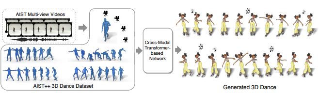

Publications
ICAR: Image-based Complementary Auto Reasoning
Xijun Wang, Anqi Liang, Junbang Liang, Ming Lin, Yu Lou, Shan Yang
AAAI 2024(accepted)
[arXiv]
MeSa: Masked, Geometric, and Supervised Pre-training for Monocular Depth Estimation
Muhammad Osama Khan, Junbang Liang, Chun-Kai Wang, Shan Yang, Yu Lou
NIPS 2023 Workshop SSLTheoryPractice(accepted)
[arXiv]
RoSI: Recovering 3D Shape Interiors from Few Articulation Images
Akshay Gadi Patil, Yiming Qian, Shan Yang, Brian Jackson, Eric Bennett, Hao Zhang
In submisstion
[arXiv]
Attention Bottlenecks for Multimodal Fusion
Arsha Nagrani, Shan Yang, Anurag Arnab, Aren Jansen, Cordelia Schmid, Chen Sun
NIPS 2021(accepted)
[arXiv]

Optical Mouse: 3D Mouse Pose From Single-View Video
Shan Yang*, Bo Hu*, David A. Ross, Avneesh Sud, Yi Liu, Graham Ruby, Bryan Seybold
Conference on Computer Vision and Pattern Recognition, CVPR 2021(CV4Animal Workshop)



Classification of Prostate Cancer Grades and T-Stages based on Tissue Elasticity Using Medical Image Analysis
Shan Yang, Vladimir Jojic, Jun Lian, Ronald Chen, Hongtu Zhu and Ming C. Lin
International Conference on Medical Image Computing and Computer Assisted Intervention, MICCAI 2016
[paper][project][supplementary document]


Real-time simulation for buried suture
Shan Yang, Wenlong Lu, Lixu Gu
Computer Assisted Radiology and Surgery (CARS), 2012